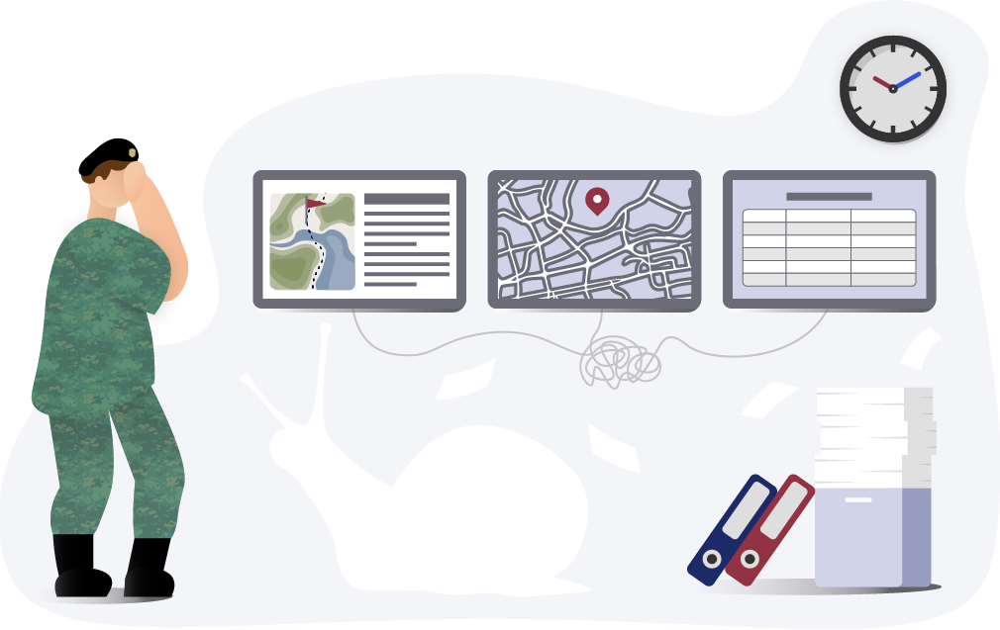
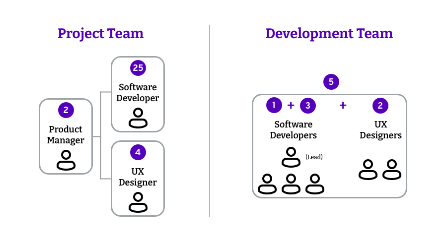
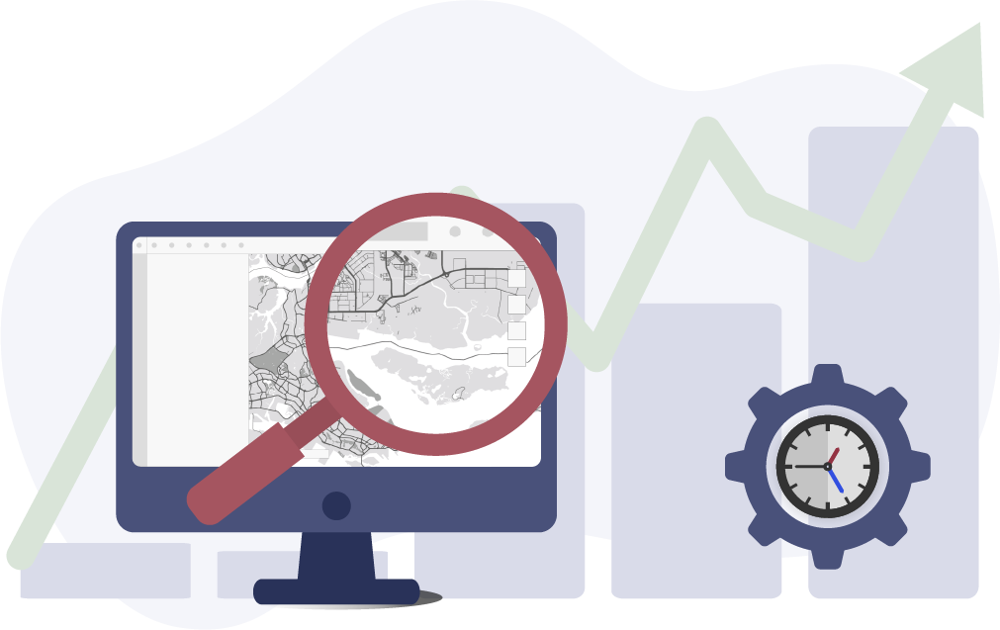

Super C3 System
Building a complex military desktop system

Overview
I co-led a design team to deliver a state of the art C3 (Command, Control and Communication) system, in the form of a large-scale desktop app, through two product releases. As a team, we conducted user research, went through numerous design iterations and tested our designs before shipping a user-centred defence system that streamlines existing military processes and saves our users precious time and effort.Scope
Design Lead , User ResearchYear
2022‼️ Disclaimer
As a past employee at DSTA, I am to abide by the Official Secrets Act and safeguard the confidentiality of the information I have had access to during my employment. As such, I cannot display the works I have done during my time at the company. However, I am willing to share more in detail about my contributions to the project over a face-to-face chat. ☕️About the Project
What the Super C3 System is
In the military context, C3 Systems are fundamental to operations by delivering the critical information required to plan, coordinate and control forces and operations across defence missions in real-time.
The Super C3 System is a powerful desktop app that serves the planning, monitoring and execution needs of army soldiers across the various vocations during wartime exercises and operations. It follows a modular software architecture and builds on a Smart Geographical Information System (GIS).
Why it Started

The Super C3 System replaces an existing legacy system that has become increasingly obsolete. With the outdated system, user experience was poor, and many mundane and procedural tasks with automation potential still had to be done manually. A new replacement was long overdue to improve work efficiency. Advances in communication technology also mean data integration is now possible to allow better interoperability across the army forces, which was previously impossible with the old technology and poorly integrated modules.
Primary Design Goals
- Create a user-friendly experience to reduce resources on user training by aligning with commercial design patterns.
- Be a great landing pad. Many users will be transitioning from the existing legacy system, which should be a fluid experience.
- Raise work efficiency by harnessing the potential of automation, eliminating the effort required for procedural tasks.
Team Structure

Managed by two product managers, the project team consists of ~20 software developers and a small design team. The design team grew from a strength of two to four towards the last quarter of 2021.
The project team splits into 3-5 development teams (depending on the project timeline) and practices the Scrum methodology, with bi-weekly sprints held concurrently. Each development team has a ScrumMaster cum lead developer and couples with at least one or a pair of UX designers.
I was matched with three development teams and collaborated closely with a fellow UX designer when she joined the team.
The Design Process
For the modules in the system under my charge, I adhered to a consistent design process in my delivery.
User Research
As a team, I conducted user research sessions through qualitative user interviews and user research workshops to elicit user needs and pain points from the users’ existing work processes.
We also synthesised design opportunities from ‘How Might We’ statements gathered from these user research sessions.
Insights
I generated UX artefacts to document complex military workflows and align the project team in the existing user flows.
Prototyping
I created the information architecture and low-fidelity concepts for primary use cases and workflows. After obtaining the green light from the product managers, developers and stakeholders, these concepts are translated to high-fidelity and interactive digital mock-ups, most times by my teammate or occasionally by myself.
Usability Testing
I led my team to conduct testings of our product to verify designs nearing product release.
- Before product releases, we tested our designs with various user groups by simulating mission scenarios to ensure the product was usable and covered all their operational needs.
Seeing Results

- The overall system usability improved from an average System Usability Scale (SUS) score of 50.0 to 63.6 following a revamp of the system’s user experience.
- For one of the modules I designed,
- The average SUS score was 80.8, and
- a user estimated the module to reduce up to 90% of the total time required in their existing workflow.
A Mini Design System
I co-led the delivery of a mini design system that specifies the system’s design principles and guidelines. This mini design system helps ensure design consistency throughout the Super C3 System and alignment with the C3D Design System.
Project Learnings
- Anyone can be a user (but yourself). It is easy to fall prey to the false-consensus effect when designing. Always test to verify a design. When time is lacking, anyone can be the user, including our project mates. Sometimes, a fresh new perspective is all that is needed.
- Test early and continuously. Involving stakeholders/users in the process as early as possible can help identify loopholes and unlock insights that save precious time and effort later on.
- Prioritisation is key. Focus on delivering a quality MVP first when rolling out new features/functions and avoid getting distracted by out-of-scope requests (or sometimes, even your own ideas).
- The design ≠ the final product. Sometimes we can get carried away with producing pixel-perfect designs, but what matters most is always the final product delivered. When resources are tight, ensuring the product is developed right should be the priority.